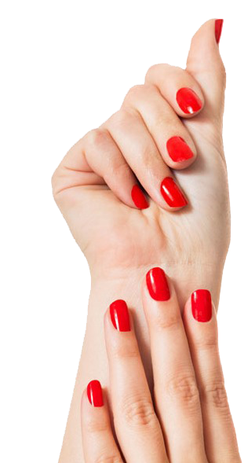
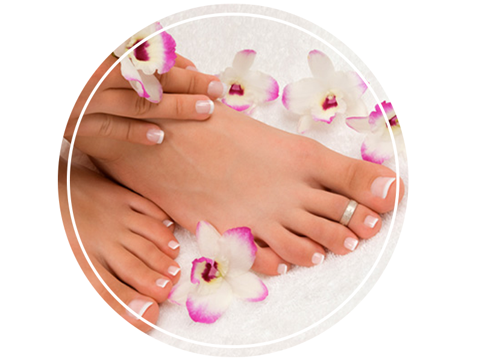
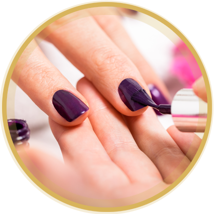
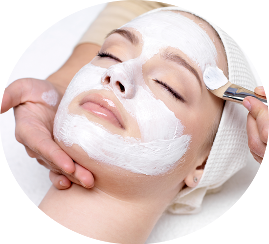
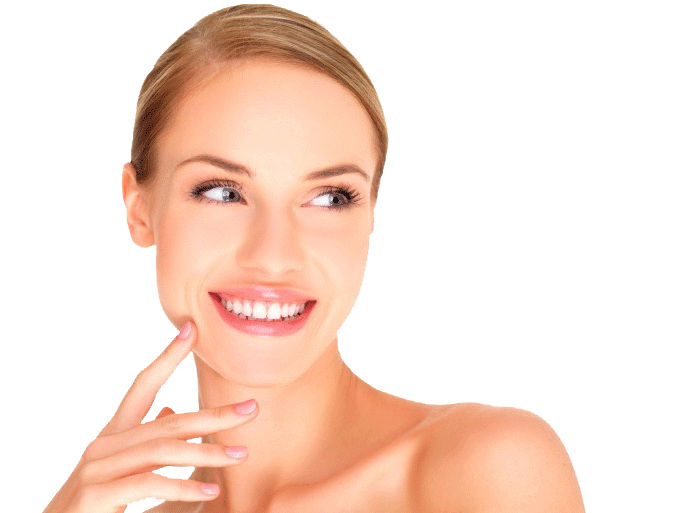
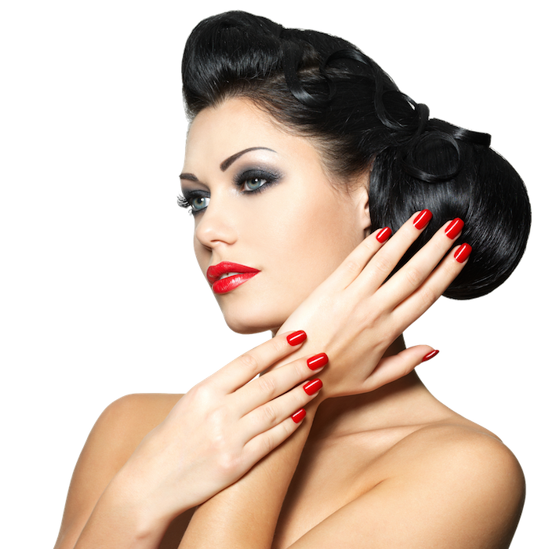
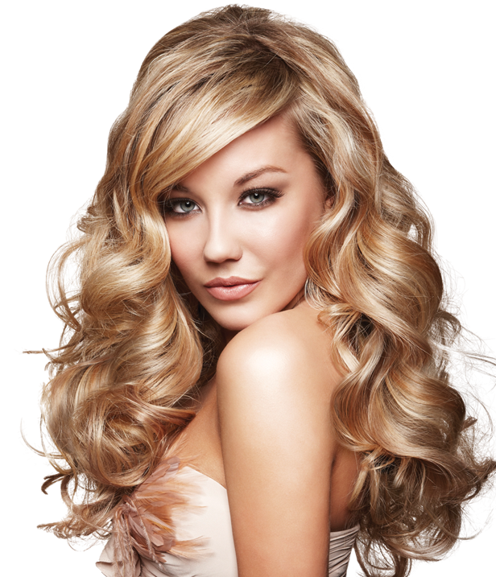

"SUA UNHA É O SEU CARTÃO DE VISITA"
Muito além da beleza, manter as unhas limpas, saudáveis e bem cuidadas pode prevenir uma série de infecções de fungos que se alimentam da queratina e até mesmo a micose.



"TRATE SUA PELE COMO ELA MERECE"
Por que devemos ter uma rotina de cuidados com a pele ? A pele é um órgão muito importante para a nossa sobrevivência, pois atua como uma barreira protetora contra bactérias, fungos, vírus e até mesmo produtos químicos. Ela ainda possui funções sensoriais e de regulação térmica.


"SEUS CABELOS PERFEITOS"
Os cabelos refletem sensualidade, revelam personalidades, denunciam o nível de vaidade, cria identidade. Quando uma mulher ou um homem decide mudar de visual, a primeira coisa que sofre a transformação são os cabelos. Seja com um corte ou com uma coloração diferente do habitual daquela pessoa.

